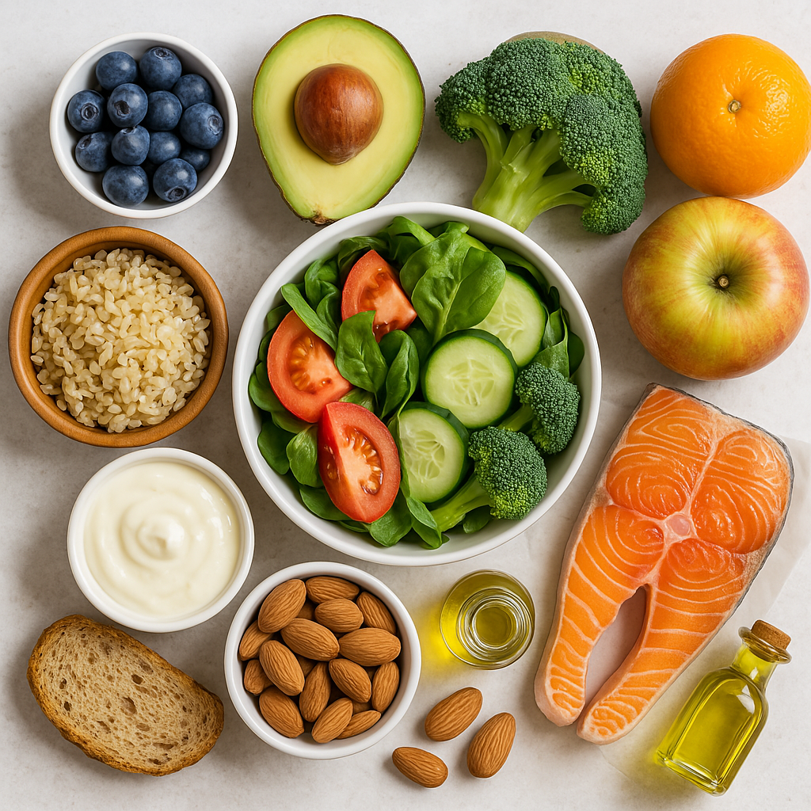

🥗 স্ট্রেস মুক্ত থাকার জন্য স্বাস্থ্যকর দৈনিক খাদ্য পরিকল্পনা

🌅 সকালে উঠেই
- ১ গ্লাস গরম জল + ১ চা চামচ লেবুর রস + ১ চিমটি হালকা মধু
- অথবা ৫টি ভিজানো বাদাম + ২টি আখরোট
🍽️ প্রাতঃরাশ (সকাল ৮টা - ৯টা)
- ২টি রুটি / উপমা / পোহা / ইডলি
- ১টি সেদ্ধ ডিম / ডিমের সাদা অংশ
- ১টি কলা বা আপেল
- চিনি ছাড়া গ্রিন টি / লাল চা
🧘 টিপস: প্রাতঃরাশ বাদ দেবেন না!
🍎 হালকা জলখাবার (১১টা - ১২টা)
- পেঁপে / আপেল / আমলকি / কমলা
- ১ মুঠো বাদাম+কাজু+কিসমিস
- নারকেল জল / লাচ্ছি
🍛 মধ্যাহ্নভোজ (দুপুর ১টা - ২টা)
- ১ কাপ ব্রাউন রাইস বা ২টি রুটি
- মিক্সড সবজি / ডাল
- কাঁচা সালাদ
- ১ বাটি দই
💧 খাওয়ার পর পানি অন্তত ১০ মিনিট পরে খান।
🕒 বিকেলের জলখাবার (৫টার মধ্যে)
- গ্রিন টি / তুলসী চা + ২টি রাগি বিস্কুট
- অল্প পরিমাণে পপকর্ন / সীডস
💡 পর্দাহীন সময়ের সাথে চা খান – মন শান্ত থাকবে।
🍲 রাতের খাবার (রাত ৭টা - ৮টা)
- টমেটো/ভেজ স্যুপ + ১ রুটি
- ভাপে রান্না সবজি / খিচুড়ি
- ১ গ্লাস গরম দুধ + ১ চিমটি হলুদ
🌙 ঘুমানোর আগে
- ৫-১০ মিনিট ধ্যান বা শবাসন
- ১ গ্লাস গরম জল
📝 অতিরিক্ত পরামর্শ
- চিনি ও নুন কম খান
- ফাস্ট ফুড এড়িয়ে চলুন
- প্রতি ২-৩ ঘণ্টা অন্তর কিছু হালকা খান
- দিনে অন্তত ২০ মিনিট হাঁটুন
- ৭-৮ ঘণ্টা ঘুম নিশ্চিত করুন